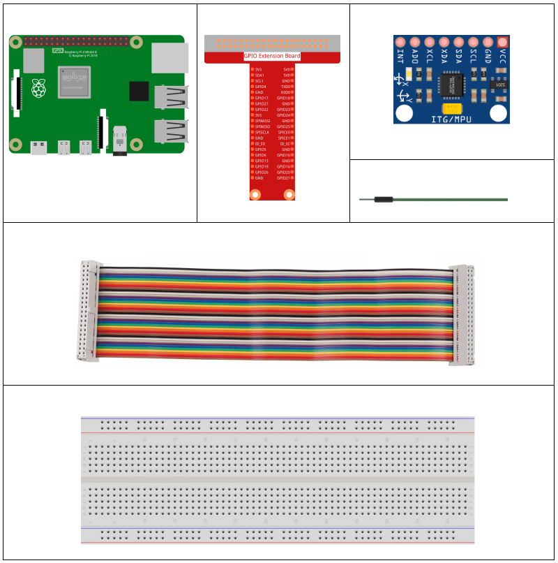
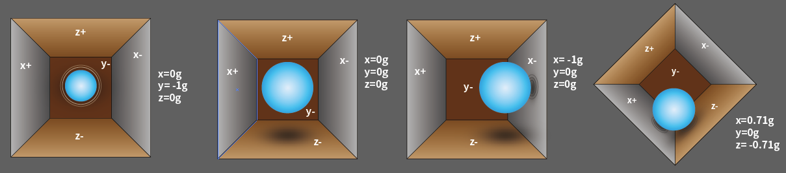
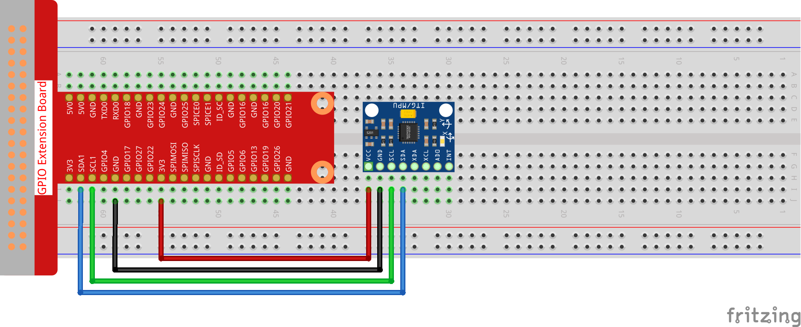

2.2.6 MPU6050 Module¶
Introduction¶
The MPU-6050 is the world’s first and only 6-axis motion tracking devices (3-axis Gyroscope and 3-axis Accelerometer) designed for smartphones, tablets and wearable sensors that have these features, including the low power, low cost, and high performance requirements.
In this experiment, use I2C to obtain the values of the three-axis acceleration sensor and three-axis gyroscope for MPU6050 and display them on the screen.
Components¶
Principle¶
MPU6050
The MPU-6050 is a 6-axis(combines 3-axis Gyroscope, 3-axis Accelerometer) motion tracking devices.
Its three coordinate systems are defined as follows:
Put MPU6050 flat on the table, assure that the face with label is upward and a dot on this surface is on the top left corner. Then the upright direction upward is the z-axis of the chip. The direction from left to right is regarded as the X-axis. Accordingly the direction from back to front is defined as the Y-axis.

3-axis Accelerometer
The accelerometer works on the principle of piezo electric effect, the ability of certain materials to generate an electric charge in response to applied mechanical stress.
Here, imagine a cuboidal box, having a small ball inside it, like in the picture above. The walls of this box are made with piezo electric crystals. Whenever you tilt the box, the ball is forced to move in the direction of the inclination, due to gravity. The wall with which the ball collides, creates tiny piezo electric currents. There are totally, three pairs of opposite walls in a cuboid. Each pair corresponds to an axis in 3D space: X, Y and Z axes. Depending on the current produced from the piezo electric walls, we can determine the direction of inclination and its magnitude.
We can use the MPU6050 to detect its acceleration on each coordinate axis (in the stationary desktop state, the Z-axis acceleration is 1 gravity unit, and the X and Y axes are 0). If it is tilted or in a weightless/overweight condition, the corresponding reading will change.
There are four kinds of measuring ranges that can be selected programmatically: +/-2g, +/-4g, +/-8g, and +/-16g (2g by default) corresponding to each precision. Values range from -32768 to 32767.
The reading of accelerometer is converted to an acceleration value by mapping the reading from the reading range to the measuring range.
Acceleration = (Accelerometer axis raw data / 65536 * full scale Acceleration range) g
Take the X-axis as an example, when Accelerometer X axis raw data is 16384 and the range is selected as +/-2g:
Acceleration along the X axis = (16384 / 65536 * 4) g =1g
3-axis Gyroscope
Gyroscopes work on the principle of Coriolis acceleration. Imagine that there is a fork like structure, that is in constant back and forth motion. It is held in place using piezo electric crystals. Whenever, you try to tilt this arrangement, the crystals experience a force in the direction of inclination. This is caused as a result of the inertia of the moving fork. The crystals thus produce a current in consensus with the piezo electric effect, and this current is amplified.

The Gyroscope also has four kinds of measuring ranges: +/- 250, +/- 500, +/- 1000, +/- 2000. The calculation method and Acceleration are basically consistent.
The formula for converting the reading into angular velocity is as follows:
Angular velocity = (Gyroscope axis raw data / 65536 * full scale Gyroscope range) °/s
The X axis, for example, the Accelerometer X axis raw data is 16384 and ranges + / - 250°/ s:
Angular velocity along the X axis = (16384 / 65536 * 500)°/s =125°/s
Schematic Diagram¶
MPU6050 communicates with the microcontroller through the I2C bus interface. The SDA1 and SCL1 need to be connected to the corresponding pin.

Experimental Procedures
Step 1: Build the circuit.
Step 2: Setup I2C (see Appendix. If you have set I2C, skip this step.)
For C Language Users¶
Step 3: Go to the folder of the code.
cd /home/pi/davinci-kit-for-raspberry-pi/c/2.2.6/
Step 4: Compile the code.
gcc 2.2.6_mpu6050.c -lwiringPi -lm
Step 5: Run the executable file.
sudo ./a.out
With the code run, deflection angle of x axis, y axis and the acceleration, angular velocity on each axis read by MPU6050 will be printed on the screen after being calculating.
Code
#include <wiringPiI2C.h>
#include <wiringPi.h>
#include <stdio.h>
#include <math.h>
int fd;
int acclX, acclY, acclZ;
int gyroX, gyroY, gyroZ;
double acclX_scaled, acclY_scaled, acclZ_scaled;
double gyroX_scaled, gyroY_scaled, gyroZ_scaled;
int read_word_2c(int addr)
{
int val;
val = wiringPiI2CReadReg8(fd, addr);
val = val << 8;
val += wiringPiI2CReadReg8(fd, addr+1);
if (val >= 0x8000)
val = -(65536 - val);
return val;
}
double dist(double a, double b)
{
return sqrt((a*a) + (b*b));
}
double get_y_rotation(double x, double y, double z)
{
double radians;
radians = atan2(x, dist(y, z));
return -(radians * (180.0 / M_PI));
}
double get_x_rotation(double x, double y, double z)
{
double radians;
radians = atan2(y, dist(x, z));
return (radians * (180.0 / M_PI));
}
int main()
{
fd = wiringPiI2CSetup (0x68);
wiringPiI2CWriteReg8 (fd,0x6B,0x00);//disable sleep mode
printf("set 0x6B=%X\n",wiringPiI2CReadReg8 (fd,0x6B));
while(1) {
gyroX = read_word_2c(0x43);
gyroY = read_word_2c(0x45);
gyroZ = read_word_2c(0x47);
gyroX_scaled = gyroX / 131.0;
gyroY_scaled = gyroY / 131.0;
gyroZ_scaled = gyroZ / 131.0;
//Print values for the X, Y, and Z axes of the gyroscope sensor.
printf("My gyroX_scaled: %f\n", gyroY X_scaled);
printf("My gyroY_scaled: %f\n", gyroY Y_scaled);
printf("My gyroZ_scaled: %f\n", gyroY Z_scaled);
acclX = read_word_2c(0x3B);
acclY = read_word_2c(0x3D);
acclZ = read_word_2c(0x3F);
acclX_scaled = acclX / 16384.0;
acclY_scaled = acclY / 16384.0;
acclZ_scaled = acclZ / 16384.0;
//Print the X, Y, and Z values of the acceleration sensor.
printf("My acclX_scaled: %f\n", acclX_scaled);
printf("My acclY_scaled: %f\n", acclY_scaled);
printf("My acclZ_scaled: %f\n", acclZ_scaled);
printf("My X rotation: %f\n", get_x_rotation(acclX_scaled, acclY_scaled, acclZ_scaled));
printf("My Y rotation: %f\n", get_y_rotation(acclX_scaled, acclY_scaled, acclZ_scaled));
delay(100);
}
return 0;
}
Code Explanation
int read_word_2c(int addr)
{
int val;
val = wiringPiI2CReadReg8(fd, addr);
val = val << 8;
val += wiringPiI2CReadReg8(fd, addr+1);
if (val >= 0x8000)
val = -(65536 - val);
return val;
}
Read sensor data sent from MPU6050.
double get_y_rotation(double x, double y, double z)
{
double radians;
radians = atan2(x, dist(y, z));
return -(radians * (180.0 / M_PI));
}
We get the deflection angle on the Y-axis.
double get_x_rotation(double x, double y, double z)
{
double radians;
radians = atan2(y, dist(x, z));
return (radians * (180.0 / M_PI));
}
Calculate the deflection angle of the X-axis.
gyroX = read_word_2c(0x43);
gyroY = read_word_2c(0x45);
gyroZ = read_word_2c(0x47);
gyroX_scaled = gyroX / 131.0;
gyroY_scaled = gyroY / 131.0;
gyroZ_scaled = gyroZ / 131.0;
//Print values for the X, Y, and Z axes of the gyroscope sensor.
printf("My gyroX_scaled: %f\n", gyroY X_scaled);
printf("My gyroY_scaled: %f\n", gyroY Y_scaled);
printf("My gyroZ_scaled: %f\n", gyroY Z_scaled);
Read the values of the x axis, y axis and z axis on the gyroscope sensor, convert the metadata to angular velocity values, and then print them.
acclX = read_word_2c(0x3B);
acclY = read_word_2c(0x3D);
acclZ = read_word_2c(0x3F);
acclX_scaled = acclX / 16384.0;
acclY_scaled = acclY / 16384.0;
acclZ_scaled = acclZ / 16384.0;
//Print the X, Y, and Z values of the acceleration sensor.
printf("My acclX_scaled: %f\n", acclX_scaled);
printf("My acclY_scaled: %f\n", acclY_scaled);
printf("My acclZ_scaled: %f\n", acclZ_scaled);
Read the values of the x axis, y axis and z axis on the acceleration sensor, convert the metadata to accelerated speed values (gravity unit), and then print them.
printf("My X rotation: %f\n", get_x_rotation(acclX_scaled, acclY_scaled, acclZ_scaled));
printf("My Y rotation: %f\n", get_y_rotation(acclX_scaled, acclY_scaled, acclZ_scaled));
Print the deflection angles of the x-axis and y-axis.
For Python Language Users¶
Step 3: Go to the folder of the code.
cd /home/pi/davinci-kit-for-raspberry-pi/python
Step 4: Run the executable file.
sudo python3 2.2.6_mpu6050.py
With the code run, the angle of deflection of the x-axis and y-axis and the acceleration, angular velocity on each axis read by MPU6050 will be printed on the screen after being calculating.
Code
import smbus
import math
import time
# Power management registers
power_mgmt_1 = 0x6b
power_mgmt_2 = 0x6c
def read_byte(adr):
return bus.read_byte_data(address, adr)
def read_word(adr):
high = bus.read_byte_data(address, adr)
low = bus.read_byte_data(address, adr+1)
val = (high << 8) + low
return val
def read_word_2c(adr):
val = read_word(adr)
if (val >= 0x8000):
return -((65535 - val) + 1)
else:
return val
def dist(a,b):
return math.sqrt((a*a)+(b*b))
def get_y_rotation(x,y,z):
radians = math.atan2(x, dist(y,z))
return -math.degrees(radians)
def get_x_rotation(x,y,z):
radians = math.atan2(y, dist(x,z))
return math.degrees(radians)
bus = smbus.SMBus(1) # or bus = smbus.SMBus(1) for Revision 2 boards
address = 0x68 # This is the address value read via the i2cdetect command
# Now wake the 6050 up as it starts in sleep mode
bus.write_byte_data(address, power_mgmt_1, 0)
while True:
time.sleep(0.1)
gyro_xout = read_word_2c(0x43)
gyro_yout = read_word_2c(0x45)
gyro_zout = read_word_2c(0x47)
print ("gyro_xout : ", gyro_xout, " scaled: ", (gyro_xout / 131))
print ("gyro_yout : ", gyro_yout, " scaled: ", (gyro_yout / 131))
print ("gyro_zout : ", gyro_zout, " scaled: ", (gyro_zout / 131))
accel_xout = read_word_2c(0x3b)
accel_yout = read_word_2c(0x3d)
accel_zout = read_word_2c(0x3f)
accel_xout_scaled = accel_xout / 16384.0
accel_yout_scaled = accel_yout / 16384.0
accel_zout_scaled = accel_zout / 16384.0
print ("accel_xout: ", accel_xout, " scaled: ", accel_xout_scaled)
print ("accel_yout: ", accel_yout, " scaled: ", accel_yout_scaled)
print ("accel_zout: ", accel_zout, " scaled: ", accel_zout_scaled)
print ("x rotation: " , get_x_rotation(accel_xout_scaled, accel_yout_scaled, accel_zout_scaled))
print ("y rotation: " , get_y_rotation(accel_xout_scaled, accel_yout_scaled, accel_zout_scaled))
time.sleep(0.5)
Code Explanation
def read_word(adr):
high = bus.read_byte_data(address, adr)
low = bus.read_byte_data(address, adr+1)
val = (high << 8) + low
return val
def read_word_2c(adr):
val = read_word(adr)
if (val >= 0x8000):
return -((65535 - val) + 1)
else:
return val
Read sensor data sent from MPU6050.
def get_y_rotation(x,y,z):
radians = math.atan2(x, dist(y,z))
return -math.degrees(radians)
Calculate the deflection angle of the y-axis.
def get_x_rotation(x,y,z):
radians = math.atan2(y, dist(x,z))
return math.degrees(radians)
Calculate the deflection angle of the x-axis.
gyro_xout = read_word_2c(0x43)
gyro_yout = read_word_2c(0x45)
gyro_zout = read_word_2c(0x47)
print ("gyro_xout : ", gyro_xout, " scaled: ", (gyro_xout / 131))
print ("gyro_yout : ", gyro_yout, " scaled: ", (gyro_yout / 131))
print ("gyro_zout : ", gyro_zout, " scaled: ", (gyro_zout / 131))
Read the values of the x axis, y axis and z axis on the gyroscope sensor, convert the metadata to angular velocity values, and then print them.
accel_xout = read_word_2c(0x3b)
accel_yout = read_word_2c(0x3d)
accel_zout = read_word_2c(0x3f)
accel_xout_scaled = accel_xout / 16384.0
accel_yout_scaled = accel_yout / 16384.0
accel_zout_scaled = accel_zout / 16384.0
print ("accel_xout: ", accel_xout, " scaled: ", accel_xout_scaled)
print ("accel_yout: ", accel_yout, " scaled: ", accel_yout_scaled)
print ("accel_zout: ", accel_zout, " scaled: ", accel_zout_scaled)
Read the values of the x axis, y axis and z axis on the acceleration sensor, convert the elements to accelerated speed value (gravity unit), and print them.
print ("x rotation: " , get_x_rotation(accel_xout_scaled, accel_yout_scaled, accel_zout_scaled))
print ("y rotation: " , get_y_rotation(accel_xout_scaled, accel_yout_scaled, accel_zout_scaled))
Print the deflection angles of the x-axis and y-axis.
Phenomenon Picture¶